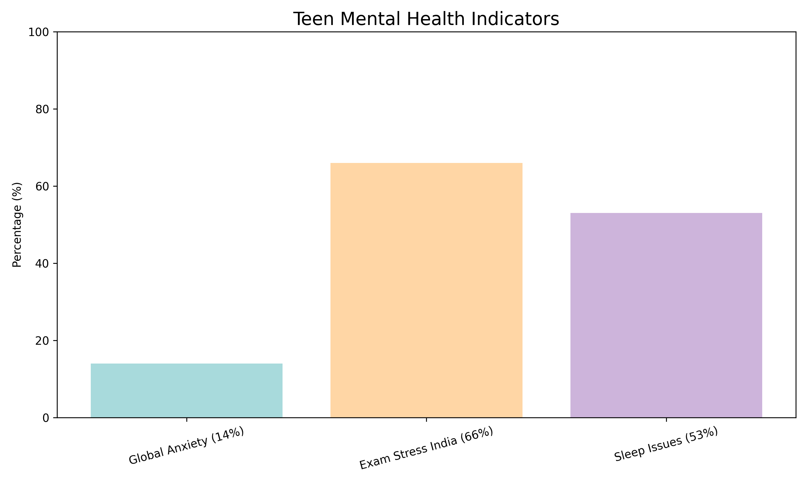
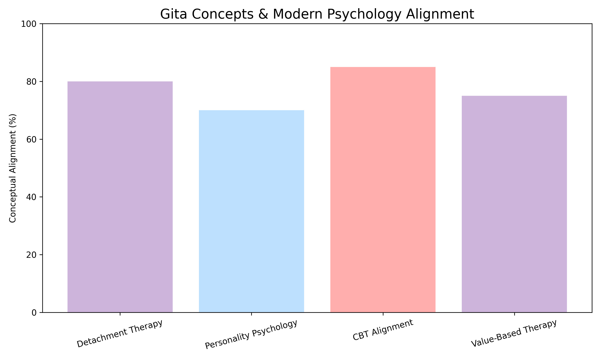
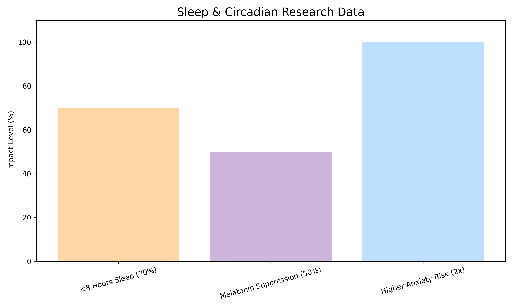
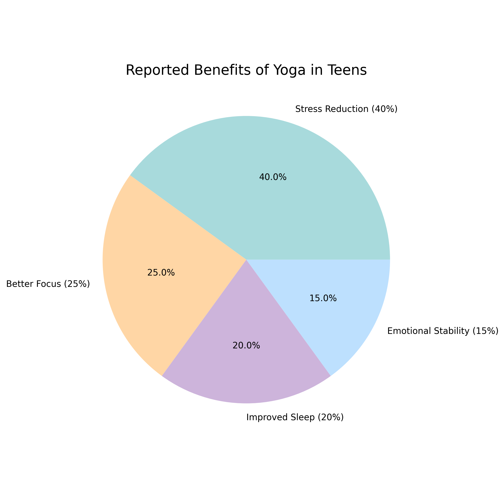

Platform Reports
Wellness Analytics & Data Insights
Teen Mental Health Overview
[RPT-001]

Analysis showing recent shifts in mental wellness metrics indicating high stress incidence.
Gita Psychology Efficacy
[RPT-002]

Performance of Dharma-based cognitive reframing over conventional psychological interventions.
Sleep Circadian Alignment
[RPT-003]

Impact of Dinacharya adherence on sleep depth and restorative Kapha phase.
Yoga Benefits Distribution
[RPT-004]

Breakdown of primary reported benefits from consistent integration of guided Asanas.